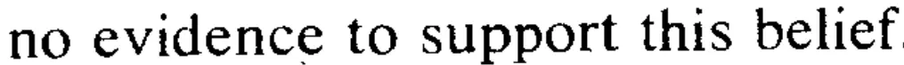
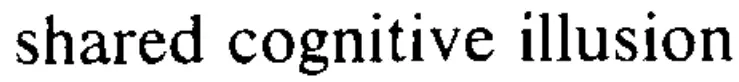
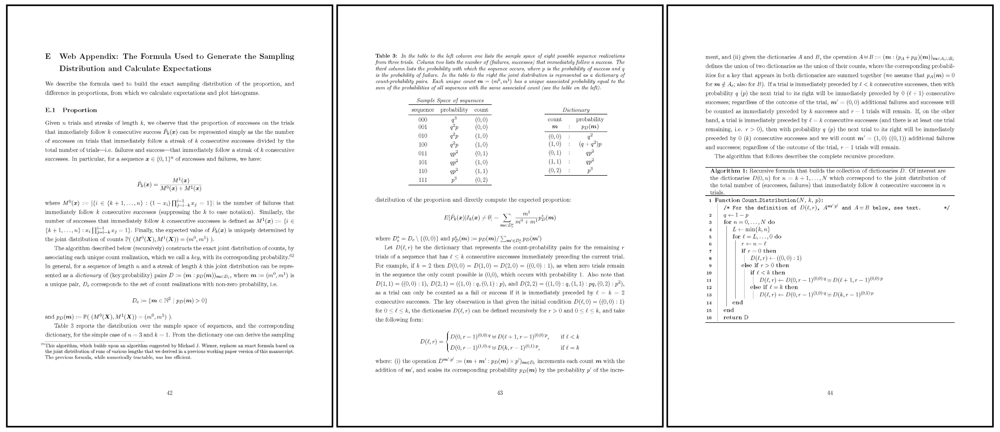
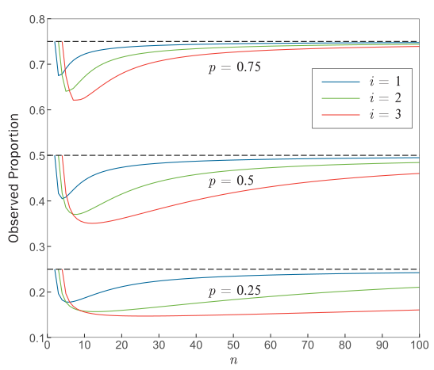

No Generative AI was used in the making of this project.
Apr. 16, 2026
Photos by Caroline Sherman (Cornell University Athletics)
If you've ever watched basketball, you've probably heard the phrase "hot hand." It refers to the concept of an "athlete having streaks of success higher than their average performance," but more specific to basketball, it says that if a person made (or missed) their last shot, they are more likely to make (or miss) the next one. The debate around whether or not the hot hand is a real "effect," or just a "fallacy" has been going on for over 40 years.
The phrase was first described in 1985, in "The Hot Hand in Basketball" by Cornell University psychology professor Thomas Gilovich, alongside famed behavioral economist Amos Tversky, and Stanford professor Robert Vallone. I'll refer to the collective as GTV, an acronym of their last names, from this point forward. In the paper, GTV conduct surveys with hundreds of basketball fans from both Cornell and Stanford University to demonstrate how widespread the belief in the "hot hand" actually was. 91% of responders believe that a player has "a better chance of making a shot after having just made his last two or three shots than he does after having just missed his last two or three shots." Such beliefs influence play: teammates may pass the ball to a player who has a believed "hot hand" just as a defending team may guard this player with slightly more concentration. Moreover, the player may end up taking worse shots if they believe that they are "hot" -- a phrase now known as a "heat check."
GTV assess this potential streakiness of basketball players' shots through three methods: analyzing (1) the field goal records of 48 home games played by the Philadelphia 76ers in 1980-81, (2) pairs of free throw shots by Boston Celtics players in both the 1980-81 and 1981-82 seasons, and (3) results of a controlled experiment involving a combined 26 players from Cornell men's and women's basketball teams. In all three cases, the results of GTV showed a lack of any evidence of streakiness in basketball, at both professional and collegiate levels. They proved the hot hand was a fallacy.


Quotes from GVT's paper showing the hot hand as a fallacy.
Over 40 years removed from the study's original publication date, basketball has changed dramatically. At all levels, the game is played with high scoring, on account of faster pace. Players are bigger, faster, and stronger. Teams are significantly more invested in analytics than before. A question arises: do any of those changes affect the results shown in GVT's breakthrough paper?
To re-evaluate the hot hand fallacy through the lens of GVT, I reproduced the same exact analysis they conducted for the Philadelphia 76ers' field goal data in the 1980 NBA season, using the Cornell University men's and women's basketball teams' shot chart data for the 2025-26 season. Within the data, the hot hand boils down to conditional probability, and the relationship between three key variables: \(\text{Pr}(H\mid M^i)\), \(\text{Pr}(H\mid H^i)\) and \(\text{Pr}(H)\). Here, \(H\) corresponds to a "hit," or a basket successfully scored, and \(M\) indicates a missed shot. I also expand the notation using the superscript \(i\) to indicate a sequence of prior hits or misses. So, the probability notation \(\text{Pr}(H\mid M^2)\) signifies the probability (\(\text{Pr}\)) of a player hitting a shot (\(H\)) given (\(\mid\)) that they missed (\(M\)) the previous two shots. If the hot hand were to exist, then we would expect \(\text{Pr}(H\mid M^i) < \text{Pr}(H) < \text{Pr}(H\mid H^i)\), or that the probability of hitting a shot is higher if you just hit a shot than the probability of hitting a shot without any prior knowledge, which is higher than the probability of hitting a shot if you just missed a shot.
Narrowing down the data to only include males and females with substantial shooting volume (players that attempted over 100 shots throughout the season) left 10 remaining athletes. For each of these players, I also calculated the serial correlation between the probability of making a shot (in general) and the probability of making a shot given that the player had just made a shot. The serial correlation coefficient \(p\) takes on values between -1 and 1, with a \(p > 0\) indicating \(\text{Pr}(H)\) and \(\text{Pr}(H\mid H^1)\) move in the same direction (if one is high then so is the other), and \(p < 0\) governing the opposite effect. If the hot hand effect were to exist, at least for the case of one made basket, the correlation coefficient should be positive: a high value of \(\text{Pr}(H)\) should be associated with a high value of \(\text{Pr}(H\mid H^1)\).
| Player | Position | Year | P(hit \(\mid\) 3 misses) | P(hit \(\mid\) 2 misses) | P(hit \(\mid\) 1 miss) | P(hit) | P(hit \(\mid\) 1 hit) | P(hit \(\mid\) 2 hits) | P(hit \(\mid\) 3 hits) | Serial Correlation |
|---|---|---|---|---|---|---|---|---|---|---|
| Cooper Noard | G | SR | 0.5 (26) | 0.54 (67) | 0.52 (155) | 0.5 (346) | 0.46 (163) | 0.46 (69) | 0.4 (30) | -0.080 |
| Jake Fiegen | G | SR | 0.63 (24) | 0.46 (50) | 0.51 (111) | 0.55 (269) | 0.58 (134) | 0.56 (70) | 0.54 (37) | 0.079 |
| Adam Hinton | G | SR | 0.72 (18) | 0.57 (49) | 0.54 (119) | 0.48 (259) | 0.45 (112) | 0.45 (42) | 0.53 (15) | -0.070 |
| Jacob Beccles | G | JR | 0.36 (11) | 0.39 (28) | 0.4 (70) | 0.47 (170) | 0.53 (72) | 0.5 (34) | 0.4 (15) | 0.108 |
| Josh Baldwin | G | SR | 0.5 (10) | 0.46 (26) | 0.46 (63) | 0.45 (138) | 0.44 (50) | 0.41 (17) | 0.33 (6) | -0.017 |
| Emily Pape | F | SR | 0.42 (36) | 0.38 (79) | 0.39 (159) | 0.35 (283) | 0.29 (97) | 0.32 (28) | 0.33 (9) | -0.088 |
| Rachel Kaus | G | JR | 0.52 (31) | 0.43 (67) | 0.43 (138) | 0.44 (275) | 0.42 (110) | 0.34 (41) | 0.5 (10) | -0.032 |
| Clarke Jackson | G | JR | 0.59 (17) | 0.56 (48) | 0.45 (102) | 0.46 (227) | 0.48 (98) | 0.47 (45) | 0.45 (20) | 0.032 |
| Paige Engels | G | SO | 0.5 (10) | 0.55 (31) | 0.41 (75) | 0.4 (160) | 0.33 (58) | 0.35 (17) | 0.2 (5) | -0.121 |
| Audrey Chen | G | SO | 0.31 (16) | 0.33 (30) | 0.35 (62) | 0.35 (118) | 0.35 (31) | 0.38 (8) | 1 (1) | 0.011 |
| Weighted Means | 0.51 | 0.47 | 0.46 | 0.45 | 0.45 | 0.45 | 0.45 | -0.024 |
Table 1 shows the results of the described calculations: the first three columns list information about the players, columns four through ten display conditional probabilities, and the last column shows the aforementioned serial correlation. While the hot hand would indicate a strong, positive serial correlation coefficient, more than half of the players' correlations are negative. As a measure of strength, I can test the statistical significance of column ten, which is a way of assessing how unlikely a particular statistic is. In the context of serial correlations, a test of statistical significance answers the question: "if a player truly did not have any correlation between \(\text{Pr}(H)\) and \(\text{Pr}(H\mid H^1)\), how likely is it to see the result I saw?" If it was very unlikely to see the actual result (with probability less than 5%), then the result is statistically significant (and strong). Over all ten players, none of the serial correlations are statistically significant.
An effect might be present among the remaining columns, and statistical significance can be measured with paired t-tests for significant differences in the means between columns four and ten, columns five and nine, and columns six and eight. Each of those tests fails to produce evidence in favor of the hot hand: each difference between \(\text{Pr}(H\mid H^i)\) and \(\text{Pr}(H\mid M^i)\) is negative (and insignificant), meaning players tend to have slightly worse shooting outcomes when conditioning on consecutive hits versus consecutive misses (\(t=-1.10, p=0.30\) for columns six and eight, \(t=-1.78, p=0.11\) for columns five and nine, and \(t=-0.62, p=0.55\) for columns four and ten). Outside of the statistical tests, simple observation of the final row of the table, the weighted means, shows that conditioning on more makes actually decreases the probability that a player hits the next shot. No matter which way you slice it, for Cornell players, the hot hand effect does not exist -- the same result that GVT got 40 years ago with their 76ers analysis.
I have not given you the full story, though. In 2018, 33 years after the GVT paper was published, two researchers from the Universidad de Alicante, Joshua B. Miller and Adam Sanjurjo, re-visited the original study. What they found was a measurement error that was so unintuitive it escaped the brightest economists and psychologists for over three decades.
The seemingly innocent calculation of conditional probability is where the error lies. To see it, imagine you took all of the shot outcomes of a fictitious player who shoots 50% from the field and whose shot attempts are truly independent from each other -- meaning the hot hand does not exist for this player. If you created a string of those attempts, it might look like this:
Now say you select all of the sequences in the above string that have some outcome preceded by three consecutive hits: all \(HHH \rule{.5cm}{0.15mm} \) substrings, and put them into a bucket. From those filtered substrings, if you chose one at random and looked at the outcome of the subsequent shot (the \(\rule{.5cm}{0.15mm}\) in the above sequence) you should expect the probability of observing an \(H\) to be exactly 50%: after all, the fictitious player truly does not have a hot hand. But that probability is not exactly 50%, it is actually slightly below.
Consider the random selection of a sequence out of all the filtered substrings in the bucket. Imagine that selection was \(HHH \rule{.5cm}{0.15mm} \), with the first \(H\) being the 10th shot in the sequence. If the sequence was \(HHHH\), you would actually have another \(HHH \rule{.5cm}{0.15mm} \) sequence, this time starting from the 11th shot in the sequence, and you would add this other sequence into the filtered substring bucket. But if the selection was actually \(HHHM\), that other sequence would not exist -- the bucket would remain the same size. That means if the sequence were actually \(HHHH\), the probability of selecting that sequence would be slightly lower than the probability of selecting the sequence at the same position had it been \(HHHM\) (since the \(HHHH\) case would add another sequence from which to choose from). The difference in selection probability means that of any selected \(HHH \rule{.5cm}{0.15mm} \) sequence, the next shot is more likely to be a \(M\) than an \(H\), despite the true shooting probability being 50%. Similar principles create a downward bias for \(\text{Pr}(H\mid H^i)\) calculations for sequences of one prior hit or two consecutive prior hits.
If you are not convinced, consider the below simulation, which performs the described conditional probability calculations for \(\text{Pr}(H\mid H^i)\) on a selected number of generations of n consecutive shots from our fictitious, no-hot-hand player.
In 100 simulations of 10 shots, the estimated probability for \(\text{Pr}(H\mid H^i)\), or the probability of \(H\) given 2 consecutive hits, is __, even though it should be 50%.
The takeaway from the error in measurement that Miller and Sanjurjo found is that the statistics for each \(\text{Pr}(H\mid H^i)\) calculations were biased downwards (and \(\text{Pr}(H\mid M^i)\) upward), meaning GVT were underestimating the hot hand effect. Correcting for the bias is relatively simple -- you just add back the amount of bias to the original statistic. Actually calculating the amount of bias to add is considerably more difficult, since no closed form solution exists for \(\text{Pr}(H\mid H^i)\) for \(i > 1\). Instead, to calculate the expected proportion of made shots, Miller and Sanjurjo, in "Surprised by the Hot Hand Fallacy? A Truth in the Law of Small Numbers," provide a recursive formula:

Appendix E of Miller and Sanjurjo's paper, which describe the bias calculations.
Following that pseudocode for calculating each of the \(\text{Pr}(H\mid H^i)\) probabilities for various initial shooting percentages and shot counts, I produce the following chart, which provides some further intuition behind the measurement bias that was present in GVT's paper, and my original analysis:

\(i\) is the length of consecutive hits that the probability is conditioned on, \(n\) is the total number of shots a player attempts, and \(p\) represents a player's unconditioned shooting probability.
This chart illustrates the magnitude of the bias, which is calculated as the difference between the "true" (unconditioned) make probability and the "expected" make probability, conditioned on a number of consecutive made shots. That gives the bias for \(\text{Pr}(H\mid H^i)\), and for \(\text{Pr}(H\mid M^i)\), the bias can simply be calculated by assuming the probability of a make is actually the probability of a miss. Notice how the difference between "true" and "expected" probabilities can be as high as 10% for certain conditions, equivalent to the difference between the best shooter on the Cornell men's team (Cooper Noard) and the worst shooter (DJ Nix) with at least 75 shot attempts.
Following the bias calculations, Miller and Sanjurjo re-produced the analysis of the controlled experiment that GVT ran on the Cornell men's and women's basketball teams. In GVT's experiment, 26 players (14 men and 12 women) shot 100 shots at various distances to the basket, and the potential hot hand was measured as the difference between each players' \(\text{Pr}(H\mid H^3)\) and \(\text{Pr}(H\mid M^3)\). Miller and Sanjurjo did the exact same calculations, except they accounted for the fact that \(\text{Pr}(H\mid H^3)\) was underweighted and \(\text{Pr}(H\mid M^3)\) overweighted. The result of the adjusted experiment data was strong evidence in favor of the hot hand effect: there was an average of a 13% increase in shot make probability following three consecutive makes versus three consecutive misses. The hot hand was real.
Understanding the error in the original study begs the question: does accounting for bias change the hot hand result for Cornell players' field goal data in 2026? For each of the players and each conditional probability included in Table 1, I calculate the amount of bias using the distributions described by Miller and Sanjurjo. That adjustment results in the following table:
| Player | Position | Year | P(hit \(\mid\) 3 misses) | P(hit \(\mid\) 2 misses) | P(hit \(\mid\) 1 miss) | P(hit) | P(hit \(\mid\) 1 hit) | P(hit \(\mid\) 2 hits) | P(hit \(\mid\) 3 hits) | Serial Correlation |
|---|---|---|---|---|---|---|---|---|---|---|
| Cooper Noard | G | SR | 0.49 (26) | 0.53 (67) | 0.52 (155) | 0.5 (346) | 0.46 (163) | 0.47 (69) | 0.41 (30) | -0.077 |
| Jake Fiegen | G | SR | 0.61 (24) | 0.45 (50) | 0.51 (111) | 0.55 (269) | 0.58 (134) | 0.56 (70) | 0.55 (37) | 0.082 |
| Adam Hinton | G | SR | 0.71 (18) | 0.57 (49) | 0.54 (119) | 0.48 (259) | 0.45 (112) | 0.46 (42) | 0.55 (15) | -0.066 |
| Jacob Beccles | G | JR | 0.34 (11) | 0.38 (28) | 0.4 (70) | 0.47 (170) | 0.53 (72) | 0.51 (34) | 0.43 (15) | 0.114 |
| Josh Baldwin | G | SR | 0.48 (10) | 0.45 (26) | 0.46 (63) | 0.45 (138) | 0.44 (50) | 0.43 (17) | 0.37 (6) | -0.010 |
| Emily Pape | F | SR | 0.41 (36) | 0.38 (79) | 0.39 (159) | 0.35 (283) | 0.29 (97) | 0.33 (28) | 0.36 (9) | -0.085 |
| Rachel Kaus | G | JR | 0.51 (31) | 0.43 (67) | 0.43 (138) | 0.44 (275) | 0.42 (110) | 0.35 (41) | 0.52 (10) | -0.029 |
| Clarke Jackson | G | JR | 0.57 (17) | 0.56 (48) | 0.45 (102) | 0.46 (227) | 0.48 (98) | 0.47 (45) | 0.47 (20) | 0.036 |
| Paige Engels | G | SO | 0.49 (10) | 0.54 (31) | 0.41 (75) | 0.4 (160) | 0.33 (58) | 0.37 (17) | 0.24 (5) | -0.114 |
| Audrey Chen | G | SO | 0.3 (16) | 0.33 (30) | 0.35 (62) | 0.35 (118) | 0.36 (31) | 0.4 (8) | 1.07 (1) | 0.020 |
| Weighted Means | 0.50 | 0.46 | 0.45 | 0.45 | 0.45 | 0.46 | 0.47 | -0.019 |
Despite the inclusion of bias-corrected metrics, much of the results of Table 2 are similar to those in Table 1. This similarity boils down to large sample sizes -- notice the expected probability distributions approach their true value as the number of shots taken increases. Since all of the players in Table 2 have over 118 shot attempts on the season, the bias that gets added is fairly low. As a result, the majority of serial correlations remain negative, and none are statistically significant. The same paired t-tests that were calculated on pairs of columns (\(\text{Pr}(H\mid H^i)\) versus \(\text{Pr}(H\mid M^i)\) for each value of \(i\)) in Table 1 yield different, but still insignificant results that invalidate hot hand effects: tests for statistically significant differences in means between columns four and ten, columns five and nine, and columns six and eight, are all moot (\(t=-0.43, p=0.68\); \(t=-0.89, p=0.40\); and \(t=0.07, p=0.94\), respectively). Again, the hot hand appears to be non-existent. But if Miller and Sanjurjo were able to show that the hot hand was real in their analysis, why does it not work here?
It turns out Miller and Sanjurjo chose to analyze the controlled experiment data, rather than field goal data, for a reason. In a normal game, from which field goal data would be taken from, the opposing team is incentivized to take away whatever player might be displaying signs of a hot hand with defensive adjustments, forcing players to take lower percentage shots. After all, the original GVT paper's survey of basketball fans showed 91% of fans from two of the nation's top universities believe in a form of the hot hand. Regardless of whether or not the hot hand actually exists, to have such a potent belief among fans likely means some players and coaches believe in it too, which influences their decision making. This line of thinking was what led GVT to perform a controlled experiment in the first place -- to "eliminate the effects of shot selection and defensive pressure" -- and is why Miller and Sanjurjo made the experimental data the focal point of their paper. Even if the hot hand existed, it would be invisible when analyzing in-game data.
If the hot hand was real, then perhaps there would be some artifact of it within the field goal data that is not conditional shooting probabilities. Each shot in the field goal dataset is accompanied by an X and Y coordinate, representing the location where that shot was taken on the court. This measure of distance could be used as a proxy for defensive adjustments and shot selection -- shots taken further from the basket might represent tough defense or a difficult-to-make shot. If distance from the basket increased with more consecutive made shots, that might be evidence of the hot hand effect, and how it causes in-game adjustments from either players or coaches. Performing the same calculations, only switching shot make probability with average distance to the basket, yields the following results:
| Player | Position | Year | Distance \(\mid\) 3 misses | Distance \(\mid\) 2 misses | Distance \(\mid\) 1 miss | Distance | Distance \(\mid\) 1 hit | Distance \(\mid\) 2 hits | Distance \(\mid\) 3 hits |
|---|---|---|---|---|---|---|---|---|---|
| Cooper Noard | G | SR | 16.87 (26) | 15.77 (67) | 17.42 (155) | 17.78 (346) | 18.26 (163) | 16.84 (69) | 17.32 (30) |
| Jake Fiegen | G | SR | 11.96 (24) | 13.36 (50) | 14.32 (111) | 14.89 (269) | 14.26 (134) | 15.12 (70) | 16.5 (37) |
| Adam Hinton | G | SR | 10.45 (18) | 14.4 (49) | 14.68 (119) | 16.27 (259) | 17.78 (112) | 17.67 (42) | 17.53 (15) |
| Jacob Beccles | G | JR | 8.2 (11) | 10.85 (28) | 11.75 (70) | 11.38 (170) | 11.62 (72) | 12.14 (34) | 10.87 (15) |
| Josh Baldwin | G | SR | 13.88 (10) | 13.4 (26) | 11.46 (63) | 13.12 (138) | 14.6 (50) | 17.38 (17) | 14.67 (6) |
| Emily Pape | F | SR | 17.88 (36) | 19.02 (79) | 18.76 (159) | 18.85 (283) | 19.2 (97) | 18.08 (28) | 16.74 (9) |
| Rachel Kaus | G | JR | 9.82 (31) | 9.32 (67) | 8.48 (138) | 9.23 (275) | 10.45 (110) | 10.55 (41) | 9.26 (10) |
| Clarke Jackson | G | JR | 8.78 (17) | 9.69 (48) | 9.35 (102) | 9.99 (227) | 10.39 (98) | 10.52 (45) | 10.08 (20) |
| Paige Engels | G | SO | 11.5 (10) | 12.52 (31) | 13.19 (75) | 12.65 (160) | 12.39 (58) | 12.54 (17) | 8.56 (5) |
| Audrey Chen | G | SO | 17.13 (16) | 18.92 (30) | 19.71 (62) | 18.81 (118) | 17.47 (31) | 18.73 (8) | 26.4 (1) |
| Weighted Means | 13.21 | 13.96 | 14.14 | 14.48 | 14.85 | 14.68 | 14.58 |
Now, the same paired t-tests for statistically significant differences in means between \(\text{(Distance}\mid H^i)\) and \(\text{(Distance}\mid M^i)\) yield significant results, at least for the \(i = 2\) case (\(i=1, t=1.37, p=0.21\); \(i=2, t=2.59, p=0.03\); \(i=3, t=1.78, p=0.11\)). Also note how the last row of weighted means of distances increases as you condition on more consecutive made shots. The effect of those shots being taken further away from the basket is that the probabilities of making them decrease, drowning out a possible hot hand. But the distances themselves might be indicators that, at least in the minds of coaches and players, the hot hand effect is real.
The truth is that while the distance metric shows some signs of being influenced by the hot hand, it is not enough to fully prove that the hot hand exists. Distance is obviously not perfect: it does not take into account something like the distance of the player to the nearest defender, or the body position from which the player took the shot, both of which could make a shot more difficult. And while the results above are promising, they are too weak to declare the existence of the hot hand. As one final effort to potentially see the hot hand effect, I ran a fixed effects logistic regression for made shots, which indicates how much of a predictor having made the last \(i\) shots is on whether a player makes the next one, controlling for both shot distance and player's shot-making abilities. Within that model, each of the "last \(i\) shots made" metrics have negligible effects on shot outcomes.
Beyond Cornell basketball, the existence of the hot hand in-game is still widely debated. The Miller and Sanjurjo paper only proved its existence in controlled settings, but more recent research has shown that in real NBA games, even when controlling for a much richer set of variables, the hot hand is unobserved. Truthfully, trying to quantify something like shot difficulty is almost impossible, which in turn makes quantifying the hot hand nearly hopeless. And while there might be clues of the hot hand scattered within the data, for Cornell athletes, the mystery of the hot hand is still an open case.